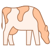

<nb-card>
  <nb-card-body>
    <input class="form-control" type="text" name="nom" placeholder="Rechercher un Bovin...." [(ngModel)]="nom"
      (ngModelChange)="Rechercher()" />
    <table class="table">
      <thead>
        <tr>
          <th scope="col" (click)="Trier('nom')">Nom bovin&nbsp;<i class="fa fa-sort"></i></th>
          <th scope="col" (click)="Trier('situation')">Situation&nbsp;<i class="fa fa-sort"></i></th>
          <th scope="col" (click)="Trier('etatDeSante')">Etat de santé&nbsp;<i class="fa fa-sort"></i></th>
          <th scope="col" (click)="Trier('idBovin')">Action</th>

        </tr>
      </thead>
      <tbody>
        <tr *ngFor="let bovin of bovins | orderBy: key: reverse | paginate: {itemsPerPage:10,currentPage:p};">
          <th scope="row">{{ bovin.nom }}</th>
          <th>{{ bovin.situation }}</th>
          <th>{{ bovin.etatDeSante }}</th>

          <!-- <th><button type="button" class="btn btn-info" (click)="open(content,idBovin)">Détails</button></th> -->
          <th><button type="button" class="btn btn-info" data-bs-toggle="modal" data-bs-target="#exampleModal"
              (click)="showBovinDetail(bovin.idBovin)">Variation poids</button></th>
        </tr>
      </tbody>
      <pagination-controls (pageChange)="p = $event"></pagination-controls>
    </table>
  </nb-card-body>
</nb-card>

<!-- Modal -->
<div class="modal fade" id="exampleModal" tabindex="-1" aria-labelledby="exampleModalLabel" aria-hidden="true">
  <div class="modal-dialog modal-dialog-centered modal-lg">
    <div class="modal-content">
      <div class="modal-header">
        <h5 class="modal-title" id="exampleModalLabel">Evolution poids Bovin</h5>
        <button type="button" class="btn-close" data-bs-dismiss="modal" aria-label="Close">X</button>
      </div>
      <div class="modal-body">
        


        <div class="body">
          <chart type="bar" [data]="data" [options]="options"></chart>

        </div>
      </div>
      <div class="modal-footer">
        <button type="button" class="btn btn-secondary" data-bs-dismiss="modal">Fermer</button>
      </div>
    </div>
  </div>
</div>

<script src="bovin.js"></script>

<!-- <ng-template #content let-modal>
  <div class="modal-header">
    <h4 class="modal-title" id="modal-basic-title">Details Bovin</h4>
    <button type="button" class="close" aria-label="Close" (click)="modal.dismiss('Cross click')">
      <span aria-hidden="true">&times;</span>
    </button>
  </div>
  <div class="modal-body">
    Je suis un details de bovin
  </div>
  <div class="modal-footer">
   
  </div>
</ng-template> -->